JANDEK: About Jandek[ Return to the Jandek main page ] | |
What’s newJandek performed an unannounced live set in Glasgow in October 2004, and since then there have been dozens more Jandek shows on both sides of the Atlantic. Some of the text below has yet to be updated to reflect this. For details on the shows, see the Live section. The Jandek on Corwood documentary (with DVD extras) has a lot of information in it that also isn’t reflected below. Eventually, that will change. For now, see the documentary. What is Jandek?Officially, Jandek is not a person. Albums and live performances are credited to “Jandek”, but the man on the album covers and on stage is “a representative from Corwood Industries”. Corwood is the record label; “Jandek” is the musical project. Both are directed by the same individual. The trinity of Jandek, Corwood, and “the representative” is both three and one. These distinctions became clear only recently, when Corwood started negotiating Jandek performances with promoters. But an early hint was that the first Jandek album was originally credited to “The Units”, a name implying a faceless collective. Even the recent live releases do not credit individual musicians. The name of the real person behind all this is known (see below). He normally avoids using his name in connection with Corwood or Jandek, but he has never made any great secret of it, either. Written communications from Corwood are signed “Corwood” or not signed at all, and in a further distancing move, he/they normally refer(s) to himself/themselves in writing as “we” — that is, Corwood — rather than “I”. This leaves the rest of us in a bit of a quandary how to refer to him/them/it — this Jandek thing. It’s most correct to refer to “Corwood” (and “they”), and to “the representative” or “the Corwood rep”. But it’s also still common to just go ahead and refer to Jandek as a person, using “he”. Until a few years ago, nobody knew it was wrong. I still say “Jandek” and “he” on this site sometimes just in order to avoid verbal contortions. Some aren’t bothered by informally using his real name — including a few of the musicians he has performed with, in their published interviews. Nonetheless, it’s polite for the rest of us to avoid it in most contexts out of respect for Corwood’s apparent wishes. Getting startedFor an introduction to Jandek and his music I suggest starting with this article: which lays out the basic facts and makes a good case for the music. And/or, you could watch this documentary, which is now available on DVD:
Another important article is this:
in which a journalist tracks down the Corwood rep in person and has
a beer with him...! Vine also talks about this, in less detail, in
the documentary. I suggest you wait to read the full article until
you’ve heard enough of Jandek’s music to make it
meaningful.
Music (short version)Before the live performances, Jandek’s recorded output
described a great arc. At the beginning and again at the end, Jandek
was alone. He moved towards collaborators and more accessible music,
then away from them again.
Music (long version)To expand on that thumbnail history at greater length:The first seven albums are (for the most part) the standard “classic” Jandek: just him and his acoustic guitar, very slow, steady guitar playing, plucked single notes only, melancholy mood. Sounds like folk blues if it sounds like anything at all, but it doesn’t really; it’s not conventionally based at all. One common, distinctive pattern is alternating high and low single notes on the guitar, in a kind of simulated counterpoint. Some songs seem looser, perhaps improvised, while others are definitely recognizable songs. One early standout in that department is the often-recorded “European Jewel”, featuring a catchy descending guitar riff. Around 1983, things changed. A female vocalist made her first appearance, on a song called “Nancy Sings”. A drummer made his first appearance, on a song called “John Plays Drums”. And Jandek started playing mostly electric guitar, in a harsh, clashing, discontinuous, dissonant style. As Jandek mangles the strings “John” crashes and bangs along with abandon on drums. It’s bracing. The Rocks Crumble (1983) and Interstellar Discussion (1984) are mostly filled with this new style. It’s an interesting contradiction: most of Jandek’s music has been ghostly, whispered, and suddenly out of nowhere comes this horrible, wonderful racket that’s closer kin to free jazz, “The Black Angel’s Death Song”, and old Half Japanese than to any of the folk/blues models the early LP’s suggest. Jandek’s late-80’s/early-90’s electric LP’s are not nearly as loud and extreme. (The drums keep on crashing and banging, but more quietly.) The next three or four LP’s in a row are different. They actually do have a good deal of the previous two styles (acoustic and electric) on them, but they also have “Nancy” all over them. Some of the songs are more-or-less-standard Jandek songs sung by “Nancy”. She has a very strong, clear voice. She can really belt it out: on one song, she sustains one note for eighteen seconds. Some songs are duets between Jandek and “Nancy” in which they improvise goofy lyrics, with lots of obsessive repetition of nonsense phrases like “I painted my teeth”. They sound like they’re having a lot of fun together. Then suddenly, the next album, Blue Corpse is all acoustic, and “Nancy” is gone. The overall tone is very sad, with lyrics like: And that’s not the only song about a breakup. Did Jandek and “Nancy” break up and this LP is the aftermath? We don’t know, but the sequencing of the albums has always given me that impression. The subsequent electric LP’s, You Walk Alone and On the Way, inaugurate a new phase in Jandek’s development. He seems to be working with a second guitarist. You Walk Alone has lots of two-guitar interplay between the two of them, and it’s easy to tell their styles apart; the other guitarist is a much more melodic, conventionally “skilled” player who strums chords instead of just plucking strings, pitch-bends, etc., and generally just owes a lot more to the kind of guitar playing you learn from records and from your guitar teacher. Some songs are almost straight blues. On these albums Jandek’s music sheds something something of its painful, awkward quality. That quality is one of the things that made earlier LP’s so compelling, but these albums work very well too. The next few albums are grab bags of past styles and directions, collections of individual songs rather than albums with a coherent overall direction. It’s like flipping through Jandek’s musical notebooks. A second female vocalist sings some songs. A new male vocalist, perhaps several of them, sing some others. The drums come back, still crashing and banging, but much more quietly, in the background. There’s a few lighthearted songs, a few blues songs, a few devotional songs, and a pair of exceptionally long, pretty, and sad songs with crystalline guitar (“I’ll Sit Alone and Think a Lot About You” and “Upon the Grandeur”). 1992’s Lost Cause, then, came as a big shock. Side 1 was like the other recent albums, but then side 2 was entirely filled by an epic improv blowout called “The Electric End”, by the far the loudest, most crazed thing Jandek had done for years, or ever. As it turned out, and as hinted at by that track’s title, it was Jandek’s farewell to electric instruments, and as it also turned out, his farewell to working with collaborators for many years (with the exception of the male vocalist on I Woke Up [1997]) Above, I have discussed the first twenty-one albums as if we knew they were recorded in the order of release. But of course we don’t know that, and in fact, by around album eighteen, the impression of chronology largely dissipates and the albums feel like collections of outtakes from various times. A standard theory, which I favor myself, is that the group records are actually the earliest recordings, made well before 1978. The letters in Irwin Chusid’s book (see below) are consistent with this theory, and both sonically and stylistically the group records sound to me like products of 1969 or so. The early solo albums, though, are timeless in feel and impossible to date with any confidence. So, in 1993, on Twelfth Apostle, Jandek returned to recording only by himself and using only acoustic instruments. The change almost but not quite coincided with Corwood’s format switch from LP to CD; Twelfth Apostle was the last LP. In some respects Jandek had reverted to the style of his earliest records, but in other ways his music developed and grown in many ways — the new records were obviously made by an older man. Glad To Get Away (1994) is the standout record from the early part of the late period — it most fully develops and sums up the new acoustic style. After, Glad To Get Away, Jandek seemed to be somewhat at a loss about what to do next. His discs from 1996 through 1999 are an uncertain assortment of experiments with new directions, none of them followed up for very long. Lyrically he’s become increasingly open about taking stock, reflecting on his music, his past, his listeners, and his relationships, all in a big knot that he keeps worrying at but can’t untie. In 2000, Jandek’s recorded career took a new and unexpected turn. The last cut on 1999’s The Beginning was a 15-minute piano solo. The song title, length, and placement of the track all implied a new direction — maybe he’d be giving up guitar and playing piano instead? This turned out to be half right — his next disc, Put My Dream On This Planet, had only vocals, no instruments at all. This seems to have been the new form of expression he’d been looking for: two more vocals-only discs followed close on the first’s heels. After the voice-only discs, there is another break in style. Beginning with 2002’s I Threw You Away, every Jandek solo album (as opposed to live album) has consisted of vocals and just one of three instruments: electric guitar, acoustic guitar, or fretless electric bass. The singing and playing on these albums (fourteen of them so far!) is recognizably changed from the 1990’s solo albums and has much in common with the singing and playing at the live shows, so it seems reasonable to assume that he is releasing them more or less as they are recorded. The music on the live albums is discussed on the Live page. Corwood IndustriesJandek is unlike most reclusive types in that he is very prolific: 59 albums since 1978, with at least one album every year since 1981, including an early-eighties burst of creativity (seven albums in three years) and a new burst of creativity still in progress (at least two new albums a year since 2001, with four new albums in 2004, four in 2005, six in 2006 (three of them doubles), two in 2007 (a double and a quadruple), five in 2008, and three so far in 2009.Jandek albums are produced by the Corwood Industries record label. In the John Trubee interview, Jandek cops to being its sole proprietor. Corwood has had the same address since 1978: P.O. Box 15375, Houston TX 77220. Before the nineties, all of Jandek’s back catalog was in print and available. The LP’s gradually went out of print during the nineties, and for a time none were available, but in 1999 Corwood started a comprehensive CD reissue program, and by June 2003, all of the old albums were available again. (Graven Image, the first new Jandek recording to be issued on CD only, went out of print for a couple years, but was re-reissued in mid-2003.) Corwood sells Jandek albums at bargain prices. Back in the 1980’s, you could order a box of 25 of them for $50. Of course, there weren’t yet 25 different albums back then, so you’d have to get some duplicates. Later on the price went up to $60. Now that he’s switched from vinyl to CD’s, you can order a box of 20 or more items (CD’s, 2CD’s, 4CD’s, and DVD’s). This is the same price extended to retailers, who then mark them up and resell them. Writing to Corwood will usually (this has remained true over the years) get you a one page mimeographed or photocopied typewritten catalog. Here is a Corwood catalog from 1989 that shows the 25 for $60 deal. (Note that the last LP listed appears to have been added at a later date, using a different typewriter.) Click for full size image. 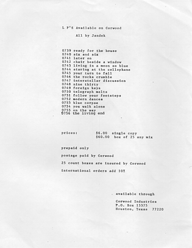 And here are Corwood catalogs from 1998 and 2001 that the current prices from that period: $8 per CD, $80 for 20 CD’s, and $3000 for 1000 copies of a presumably created-on-demand CD reissue of any of the out-of-print LP’s (now that all the LP’s have been reissued, this of course no longer applies). Click for full size images. Note the handwritten note on the second catalog. 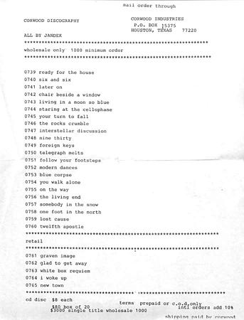 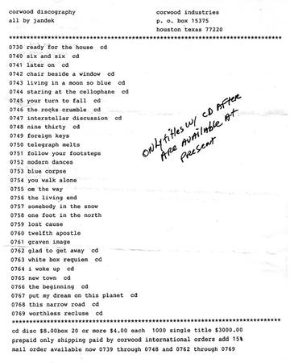 Here’s an October 2005 catalog (click for full size image): 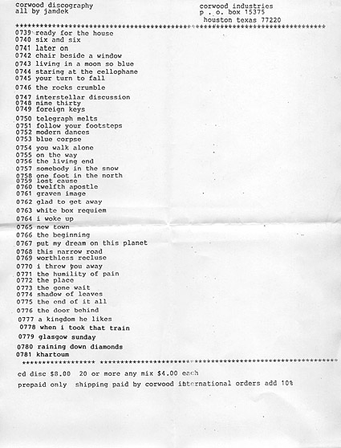 And finally, here’s a catalog that was current as of July 2009; it shows a slightly different price structure (new as of the release of Corwood 0791) for ordering a box or 20 more. Instead of listing separate prices for the different media types when included as part of a box, there’s a 50% discount across the board. Click for full size image: 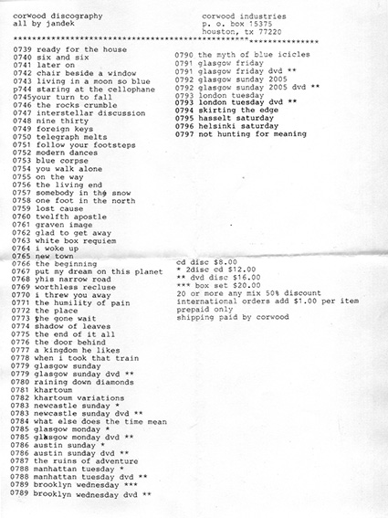 At least in past years, Corwood quite consistently sent the LP’s to college radio stations. WHPK at the University of Chicago still has a complete set. WRCT in Pittsburgh used to receive two copies of every release. Corwood even used to advertise (!) — here’s a quarter page ad that appeared in Op magazine: 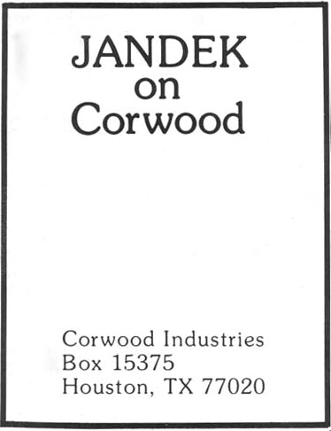 In the documentary, some Op staffers tell the story of this ad. I’m told that some ads were placed with more information such as album titles. It would seem, however, that these promotional efforts ceased some years ago — neither WHPK or WNUR have been sent any of the CD’s, and no recent ads have been sighted. (Some individuals do still receive free copies from Corwood, as promotion or perhaps just as gifts?) Corwood has occasionally given permission for Jandek material to be used in other contexts:
Album coversOne of the richest sources of speculation about Jandek, after the lyrics to his songs, are the photos on the album covers. They are almost invariably blurry, indistinct, enigmatic.Here’s some of the things you’ll see on the covers:
Several general progressions are evident:
The album covers dating back to Jandek’s early life give some general impressions of his upbringing: parents that apparently cared enough to photograph him fairly often; visits to relatives (Worthless Recluse); a big white house, a little weathered, with flowers planted by it (Nine-Thirty, Foreign Keys); a guitar around his neck already as a teenager (Follow Your Footsteps). His clothes and hair are conservative on the covers of Lost Cause and Worthless Recluse, but then rebelliousness sets in: on the covers of Foreign Keys and White Box Requiem his hair and sideburns are long and shaggy, and then on Six and Six his hair is short again but now he looks like a rock-n-roll rebel. Here’s my best effort to put all the photos of Jandek in chronological order. This is not at all easy and some choices are very much arguable. 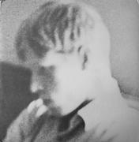 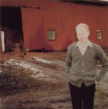 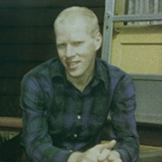 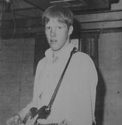 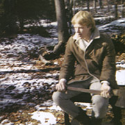 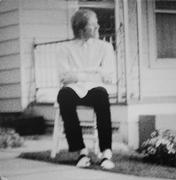 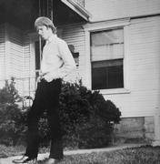 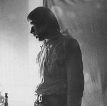 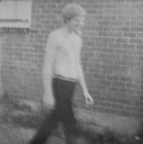 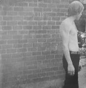 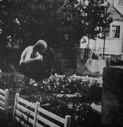 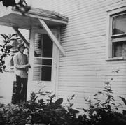 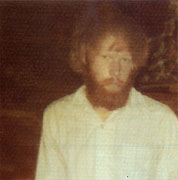 ![[album cover]](images/covers/0780.jpg) 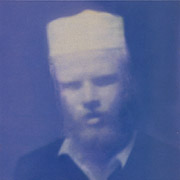
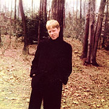
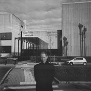
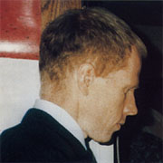
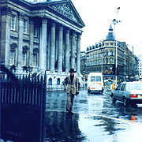
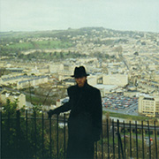
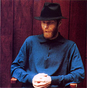
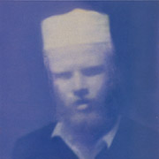
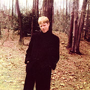
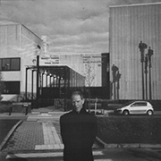
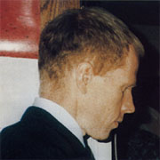
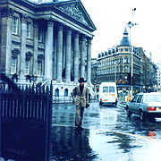
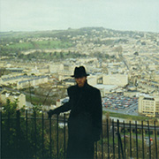
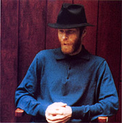
See the Discography page for further commentary on the cover photos. The back covers of all Jandek albums are basically identical in format, although they vary in typeface and other minor details, as if they were done by a succession of different typesetters, each of whom was instructed to imitate the last one. The basic format is plain. The catalog number in small type in the upper right; “Jandek” and the album title in big bold type at the top; the track titles and times (uncharacteristic of Jandek to be so informative!) in the middle; Corwood’s address and a copyright notice at the bottom. The track titles and address are set off from the big titles at the top by two double lines. I have no special interpretation of this format except as evidence of consistency. (But, see One Foot in the North for a strange exception to the rule...) The back covers of CD reissues were re-typeset, not photographically reproduced from the LP issues. Starting in 2002, the CD’s started carrying printed UPC bar codes on the back. BiographyI have no clue where the name “Corwood” comes from. What about the name “Jandek”? I’m reminded of Ursula K. LeGuin’s novel The Dispossessed, which portrays a society whose citizens are assigned a name at birth consisting of two random computer-generated syllables; for example, the main character’s name is Shevek. There is a company in England called Jandek Kits (6 Fellows Avenue, Kingswinford, West Midlands, DY6 9ET United Kingdom) that produces some kind of amateur radio equipment; can’t say if there’s a connection. When I was in Budapest some years ago I saw a big sign on a building reading “AJANDEK” — perhaps it’s a Hungarian name? (I have since been informed that “ajandek” means “gift” in Hungarian...) A net search turned up a Heinz Jandek who is a computer programmer at the University of Cologne in Germany, a Rostislav Jandek who lives in the Czech Republic, an Irving Jandek in Woonsocket, Rhode Island, and a Hartmut Jandek who got third place in a sailing competition in Spain in 1996 (way to go, Hartmut! we’re all proud of you), so apparently it’s not an unknown surname. None of this tells us much.So who is Jandek? No one knows for sure. For decades, he never performed live. He doesn’t perform live or give interviews; he has never made any public statement of any kind. The Katy Vine story above is the only documented encounter anyone’s had with the man in person. She must have done some detective work to track him down, but I suspect it was probably not all that hard. Jandek hides himself, but he hasn’t gone to extreme lengths to cover his tracks. After all, his picture is on his album covers! Residents of Houston report seeing him around town, going about his business. Corwood Industries is a business, and some kinds of information about registered businesses are a matter of public record. But please don’t go after him; when Katy Vine tracked him down, he didn’t refuse to talk, but he mostly steered the conversation away from music, and when it was over, he “stress[ed] that even though he had had a nice time, he didn’t want to be contacted in person by a fan or a journalist or anybody about Jandek ever again.” Even if you hung around the Houston post office, you might not catch Jandek himself, but only a Corwood Industries delegate or functionary. If you write Corwood Industries a check, it comes back signed on the back by “Sterling R. Smith”. In the old, pre-live-performance days, several people reported having spoken on the phone with a man named Sterling Smith who handles things like orders from distributors, but who categorically denied that he is Jandek and refuses to answer any questions about him. However, when Irwin Chusid spoke to Smith in 1980 (see Songs in the Key of Z, page 60), Smith talked about the records as “my music”. Katy Vine reports that the man she talked to was the man pictured on the album covers, but he wouldn’t directly admit to having made the music, but the overwhelming impression from various details in the article is that in fact he had. And one record store owner who spoke with Mr. Smith reports that his voice was the voice on the records. So it seems reasonable to assume that Sterling Smith is Jandek, and that the strategy of pretending that Sterling Smith is from Corwood Industries, but is not actually Jandek, is a strategy that was only adopted after the early 80’s. Epistemological disclaimer: here, I’m going to try to connect the dots, to make the inferences and possible generalizations that the records and other available information appear to suggest. For example, I will speak as if we knew that first-person song lyrics are at least semi-autobiographical, and other such reasonable-seeming but undeniably questionable assumptions. But as you read bear in mind what I won’t explicitly mention again: the possibility that some of the available signs may be misleading or even intentionally deceptive. Personally, my feeling is that Corwood might hide or misguide, but wouldn’t intentionally fabricate or deceive. If you write to Jandek care of Corwood, you may get a few handwritten words in reply, particularly if you ask a factual question about ordering or request permission for something. Other kinds of questions and communications may simply be ignored, but you never know. Irwin Chusid, for example, exchanged a number of letters and phone calls with Sterling Smith in the early 80’s. I don’t know any other such extensive contact with the man in the years afterwards, but in the last few years the live performances have obviously brought Corwood into much greater contact with the outside world, both in person and by phone or letter. Direct requests for interviews by Richie Unterberger in 1986 and Chusid in 1998 were refused. In the early 80’s, Smith seems to have been fairly forthcoming with Chusid on some matters, but not on others: “He rambled in a halting monotone, his speech punctuated by aposiopesis (the sudden breaking off in mid-sentence as if the speaker is unwilling or unable to continue). I asked questions; he gave oblique answers. He wouldn’t explain what he did for a living.” So, other than general impressions gleaned from the album covers, very little is known about Sterling Smith’s life. Presumably he was at least 20 when he made Ready for the House, which would make him at least fifty now. In 1999, Katy Vine wrote that he appeared to be “late-thirties”. According to the copyright records at the Library of Congress, Sterling Smith was born in 1945, making him over sixty now. The man at Jandek’s live appearances could certainly be that old, though he looks younger. I have no trouble accepting the birth year in the copyright records. Chusid reports that Sterling Smith said on the phone that he had “no friends”, but if that was true in 1980, it certainly seems to have changed in only a few years, judging from all his collaborators, and from the evident involvement with other people in his lyrics. In Vine’s article he is seen at a bar with his pals from the office. He may have a connection to Ohio, perhaps even grew up there. “Nancy” is from Ohio (see “Collaborators” below), and there are some Ohio references on Jandek albums (see “Themes”, below). He is a traveler. Nine-Thirty (1985) has songs about a trip through the American southeast. “Rain in Madison” is presumably about a trip to Madison, Wisconsin, and the lyrics refer to sitting in a car. A letter quoted by Chusid refers to Smith’s “experience in living in lower Manhattan”. Five album covers since 2002 are snapshots taken in Europe. Katy Vine says her interviewee “had visited big and small cities all over the U.S., Mexico, and Europe.” It seems from the Katy Vine article that he is now a professional or office worker of some kind, wearing “beautiful cufflinks” and living in “one of the city’s nicer neighborhoods”, but his career is “of increasing disinterest”. Consult her article for further tidbits. Note that there are many Sterling Smiths in the United States, including several in Houston; it’s not that rare a name. Please resist the urge to dig any deeper into Smith’s personal and/or professional life; it’s none of our business. CollaboratorsAn outside vocalist makes her first appearance, on a song on Chair Beside a Window called
“Nancy Sings” — we’ll call her
“Nancy”. On this first song she sings in a high breathy
voice, while on later albums she usually sings in a lower, brassier
voice, so while we can’t be absolutely certain it’s the
same person, it sure sounds like it to me.
I have yet to go back and carefully review the albums in light of the information in this letter. There’s been some detailed discussion of this on the Jandek mailing list that I plan to review and incorporate into this page at some point. On later albums, particularly You Walk Alone (1988), there is clearly a second electric guitarist. The acoustic guitarist on Blue Corpse (1987) is probably this other guitarist, not Jandek. Jandek is heard saying “Take it, Eddie” before a guitar solo, so we’ll call him Eddie. Two songs, “Sadie” and “Give It the Name”, from On the Way (1988), are sung by a male vocalist who is definitely not Jandek (and presumably not named Sadie either). The first three songs on Blue Corpse are sung by an alternate male vocalist as well, as are a few other songs on albums from that era (circa late 1980’s). (A few people on the Jandek mailing list are still disputing this, but I regard the case as closed — the two voices are easy to tell apart. It’s harder to tell whether there is a third male singer or not.) There are drums on the early 90’s albums, which sound like they’re played by John to me, although much more subduedly than on earlier LP’s. Nancy’s sister Pat, who initially appeared briefly on Chair Beside a Window, is featured at greater length on Somebody in the Snow. While the sisters’ voices are similar in many respects, they’re fairly easy to tell apart because Nancy’s singing is clearer and stronger. Some of these extra musicians might actually be Jandek himself using overdubbing, but I don’t think that’s usually the case. The extra guitarist(s)’s style(s) are quite distinct, and on several songs, you can hear the musicians saying things to each other. Nonetheless, we know from the letter I quote above that there are some one-man-band overdubbing jobs. The Rocks Crumble is a possible one-man-band candidate. Another candidate is side two of Somebody in the Snow. For example, “Remind You” has Jandek doing separate and sometimes overlapping vocal tracks in the left and right channels, so that’s definitely overdubbed. That suggests Jandek could be the drummer on these tracks as well. Elsewhere there are some songs, such as “I’ll Sit Alone and Think a Lot About You” from On the Way, where the guitar and vocals are both by Eddie, so if Jandek is playing anything on those songs, he’s playing drums. I Woke Up (1997) is the only CD-era Jandek album with obvious outside musicians. Most of the vocals are taken by someone who I think Jandek calls “Mike” at one point. “Mike” mostly recites rather than sings. This CD also has drumkit on one song and hand percussion on one song — could be “Mike”, or “John”, or Jandek himself. Antecedents and followersAn interesting thing to know about Jandek would be how aware of his
precedents he is. It’s interesting to compare and contrast the
Godz (definite vocal resemblance, similar ragged rhythms, and a
similar way of straddling the acoustic/electric divide), Skip Spence
(Oar is amazingly Jandek-like), the Shaggs, early Half Japanese
(in reference to Jandek’s loudest rock stuff), Loren Mazzacane
Connors, Tim Buckley (I’m thinking specifically of
Lorca), Hasil Adkins...
The tribute CD, released in 2000, contains versions of Jandek songs
performed by Low, Gary Young, The Goblins, Amy Denio, Ivory Elephant,
and others. The cover photograph of a graveyard was supplied by
Corwood. Summersteps’ website includes
track listings, ordering info, and scans of the two disposable cameras
full of graveyard photos sent by Corwood.
Palace’s Days in the Wake (Drag City, 1994) has a cover photo that appears to be a direct Jandek homage (complete with curtains), and the music sounds a lot like Jandek’s, too. For a while in the nineties there was a band named after the album Telegraph Melts. DataJandek’s aesthetic is austere, but not perfectionist: he
releases multiple versions of songs, cuts off songs by stopping the
tape in the middle, and flaunts his disregard for what most people
would consider good “singing” (although note that he
always sings, he never talks his way through lyrics a la Lou Reed or
the male vocalist on I Woke
Up [1997]). A lot of songs end with a sort of sharp thump
that might be Jandek hitting the stop button on the tape recorder, or
striking the body of his guitar. He does have an obsessiveness with
regard to his albums (steady release schedule, consistent appearance)
and a flair for cross-reference: songs have sequels; lines from songs
later become album titles; characters reoccur (e.g, “The
Janitor”, “Janitor’s Dead”).
ThemesHere are some common themes in Jandek titles and lyrics:
| |
| [ Return to the Jandek main page ] |
{kind=link}
{kind=link}
{kind=link}
{kind=link}
{kind=link}
{kind=link}
{kind=link}
{kind=link}
{kind=link}
{kind=link}
{kind=link}
{kind=link}
{kind=link}
{kind=link}
{kind=link}
{kind=link}
{kind=link}
{kind=link}
{kind=link}
{kind=link}
{kind=link}
{kind=link}
{kind=link}
{kind=link}
{kind=link}
{kind=link}
{kind=link}
{kind=link}
{kind=link}
{kind=link}
{kind=link}
{kind=link}
{kind=link}
{kind=link}